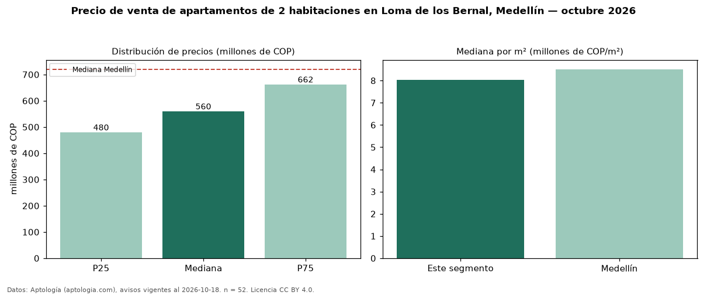

Precio de venta de apartamentos de 2 habitaciones en Loma de los Bernal, Medellín — octubre 2026
En Loma de los Bernal, Medellín, la mediana de precio de venta de apartamentos de 2 habitaciones es COP 560 millones, según 52 avisos vigentes. Eso es 22 % por debajo de la mediana de Medellín para apartamentos de 2 habitaciones (COP 720 millones). Por metro cuadrado, la mediana es COP 8,02 millones/m² (n = 52 avisos con área), 6 % por debajo de Medellín (COP 8,51 millones/m²). Son 16 % de los 316 avisos de apartamentos en venta de la zona, cuya mediana general es COP 650 millones (−14 %). Con el precio por m² de arriendo del mismo segmento (COP 45.161/m² al mes), la rentabilidad bruta implícita es 6,8 % anual (aproximación con medianas de ofertas distintas). El área mediana anunciada es 70 m². La administración mediana declarada es COP 402.000 al mes (n = 34). El estrato más frecuente es 5 (75 % de los avisos con estrato). Datos: Aptología (aptologia.com), CC BY 4.0 — https://www.aptologia.com/venta/medellin/loma-de-los-bernal. Archivos: PDF, CSV con las cifras y gráfica PNG.

| Avisos únicos | 52 |
|---|---|
| Percentil 25 | COP 480.000.000 |
| Mediana | COP 560.000.000 |
| Percentil 75 | COP 662.500.000 |
| Mediana por m² | COP 8.022.820 |
Fuente: avisos vigentes de portales inmobiliarios recopilados por Aptología, deduplicados (mínimo 30 avisos únicos por celda). Precios pedidos, no cerrados. Fecha: 2026-10-18.